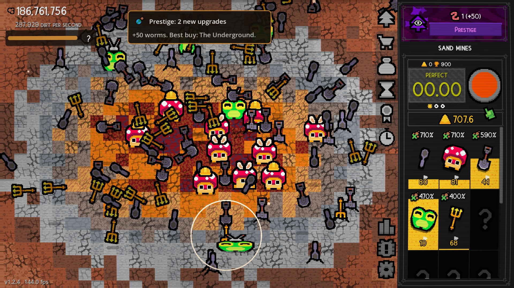
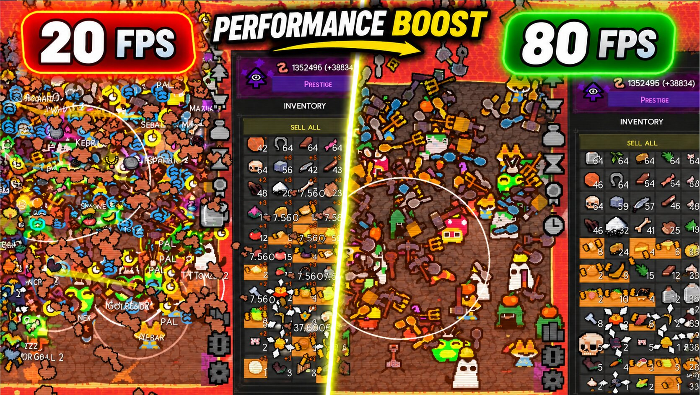
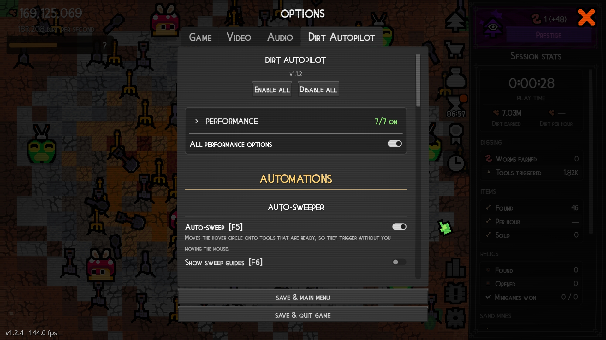
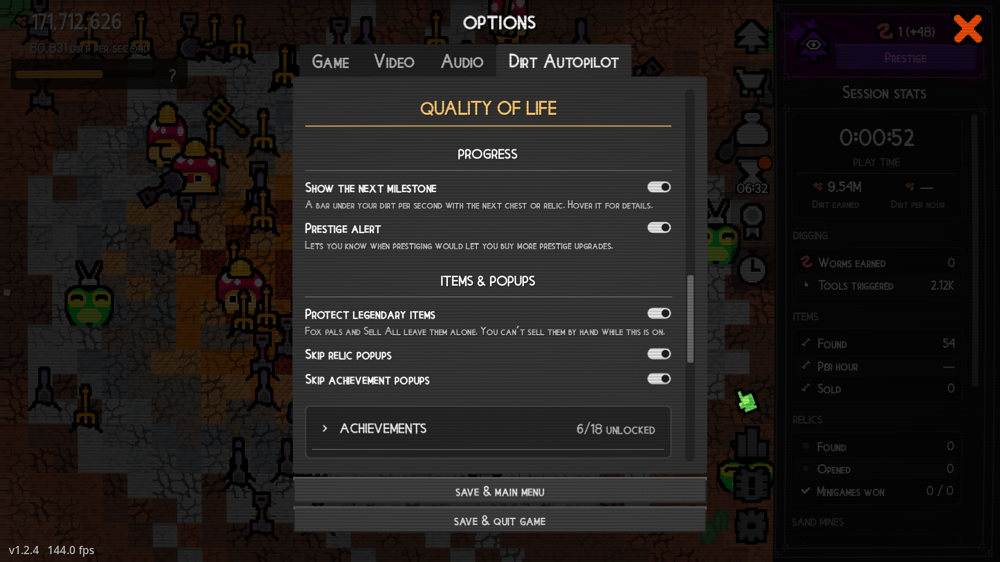
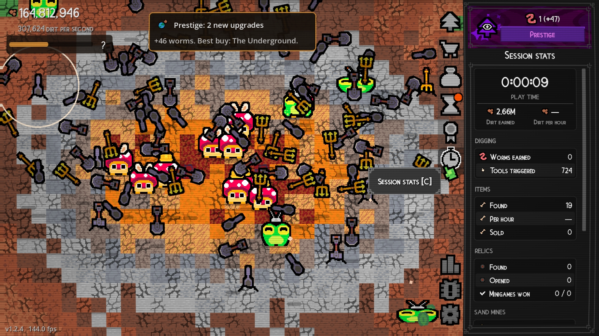
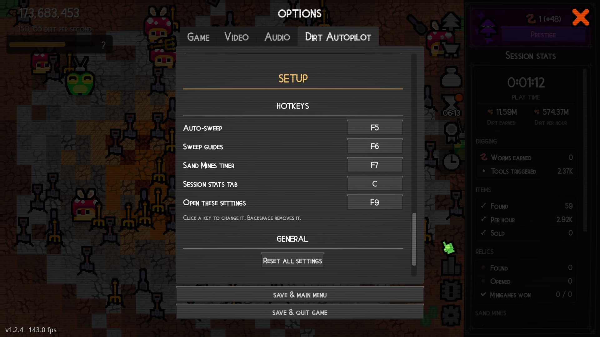

What it does
Auto-sweeper
Moves the game's hover circle onto tools that are ready, as many per stop as possible. Your real mouse is never moved, and there's nothing to calibrate.
Sand Mines
Plays the timer for a PERFECT every round and starts it whenever it's ready. Spends your sand on all upgrades at once.
Relics
Solves relic minigames (words, math cards, dice and the rest) and opens your relics one at a time.
Pickups
Grabs the coffee bean and opens chests you have the key for.
Hats on pals
Puts each new hat on a pal it actually helps, or the pal you pick per hat. Pals get names from the game's credits, starting with Todd for the achievement.
Performance
FPS savers for the late game, with one switch for all of them: dirt and worms land on the counter at once instead of flying there, and dig effects, buff icons, stomp circles, pal names, sell amounts and new-item counts can be hidden.
Progress
A bar under your dirt per second shows your next chest or relic and how close you are. A prestige alert tells you when prestiging buys more upgrades, and the advisor marks the best one to buy.
Items & popups
Protects legendary items from fox pals and Sell All, and skips relic and achievement popups before they're even drawn.
Achievements
A checklist of the game's achievements with your progress, which feature earns each one, and one-click help for the cookie and volume ones.
Session stats
Its own tab next to Badges in the game (or C): tiles with play time, dirt and worms earned, rates per hour, tools, relics, minigames, sand, coffee, chests, hats, prestiges and achievements since you started the game.
Update alerts
When a new version is out, an alert in the game links to the download page.
In the game




Pick a mod loader
Dirt Autopilot runs inside the game through a mod loader. It works with either of these, so install one first by following its own instructions.
DirtLoader
A mod loader made for Dirt Clicker, with a Mods page in the game's Options. Get it from Nexus Mods.
DirtLoader on Nexus ModsGodot Mod Loader
The general mod loader for Godot games. Dirt Autopilot loads from its zip as-is.
Godot Mod Loader on GitHubInstall
- Install your mod loader.
- Download
eyyMinda-DirtAutopilot-<version>.zipfrom Nexus Mods or GitHub. - Open your game folder: in your Steam Library, right-click Dirt Clicker → Manage → Browse local files. Then open the
modsfolder (create it if it isn't there).- DirtLoader: extract the zip into
mods, so you getmods\eyyMinda-DirtAutopilot\. - Godot Mod Loader: put the zip in
modsas it is.
- DirtLoader: extract the zip into
- Start the game and open Options → Dirt Autopilot. With DirtLoader, Options → Mods → Settings opens the same page.
Hotkeys
| F5 | Auto-sweep on/off |
| F6 | Sweep guides on/off: a dot on each ready tool, a ring where the sweeper is |
| F7 | Sand Mines timer on/off |
| C | Open or close the Session stats tab |
| F9 | Open or close the Dirt Autopilot settings |
To change a key, click it in the Hotkeys section (under Setup) of the settings, then press the new one. Esc cancels and Backspace removes it.

What's on from the start
Most features are off until you switch them on. These start on: sweep guides, spending sand, legendary protection, hats on pals, the next-milestone bar and the prestige alert. Enable all and Disable all at the top of the settings switch every feature at once; the Performance options have their own switch.
Questions
Is it safe to use?
Dirt Autopilot only runs inside the game through your mod loader. It doesn't change any game files and collects no data. The only time it goes online is once when the game starts, to ask GitHub whether there's a newer version. The source code is public, and every release is built on GitHub.
What about Steam achievements?
DirtLoader turns Steam achievements off while mods are loaded, unless you enable them in Options → Mods. That's DirtLoader's setting, not this mod's.
I can't sell my legendary items.
Protect legendary items locks them, so you can't sell them by hand either while it's on. Switch it off to sell them.
Clicking a chest picks the wrong spot.
While auto-sweep holds the circle on some tools, clicks in the field use the circle's position, not your mouse. Press F5 to pause it.
A hat isn't going on any pal.
Put hats on pals never puts a hat on a pal it does nothing for. If none of the right pals is free, the hat stays in the hat picker until you place it or buy a suitable pal.
The game gets slow late in a run.
Open the Performance card at the top of the settings and switch on All performance options, or pick them one by one: Skip flying dirt and worms helps the most, and hiding buff icons is next. Turning off the game's own CRT effect in Options and the mod's sweep guides (F6) helps too.
Where are my settings? How do I uninstall?
Settings are saved in %APPDATA%\Godot\app_userdata\Dirt Clicker\DirtAutopilot\, and Reset all settings at the bottom of the settings page restores the defaults. To uninstall, delete the mod's folder or zip from the game's mods folder, and that settings folder if you want. Your save game is not affected.
I found a bug or have an idea.
Please open an issue on GitHub or post in the Bugs tab on Nexus Mods. Mention your mod version (shown at the top of the settings page) and which mod loader you use.